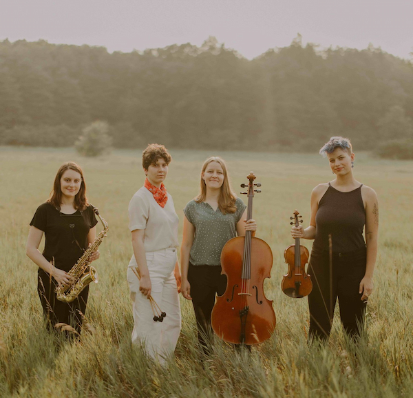

About the Ensemble
Virago is a Michigan-based quartet and a new voice for classical music. The ensemble was founded in 2018 at the University of Michigan. The ensemble is based in primarily Ann Arbor and Detroit, Michigan. The group focuses primarily on improvisation. With a heavy focus on creative and personal growth, the group is not only making strides in performance but in the educational space, as well as in the community.
Virago has performed at the Matthaei Botanical Gardens, University of Michigan Museum of Art, K.Oss Art Gallery, Argus Farm Stop, Ziggy's, Duderstadt Video Studio, Third Place [Music Fest], GrandStand Music Festival, and other festivals, concert halls, local businesses and public spaces across Southeastern Michigan. The group is known for its unusual instrumentation, as well as their drive to push boundaries and redefine the classical music space.
The ensemble consists of:
- BethAnne Kunert, alto/soprano saxophone
- Sofia Carbonara, percussion
- Wesley Hornpetrie, cello
- Meg Rohrer, violin/viola
Projects
The ensemble has collaborated with some of the city's top musicians and composers to challenge themselves and create projects that both inspire them and push them. Their music aims to connect with audiences in a way that is authentic to them and understandable.
The group's projects include:
The Infinite Detail of This Place and Time
This is an emerging series of collaborations with visual artist Bridget F. Quinn and the Area Wilds Exploration (AWE) Society. Photos and videos of the live installments are available on their website, linked in the footer.
Listening for the Bells
This 2019 release was a piece the ensemble commissioned local Detroit composer Harriet Steinke to write. The piece is structured in four parts that can be played in any order, repeated, stand alone, or even blended together. The piece is described as a musical playground for the artists where they can challenge themselves to explore and be inspired by. The piece is available for listening on Apply Music, Spotify and BandCamp.
From Darkness We Awaken
This is Virago's latest project in collaboration with Detroit composer Michael Malis. The piece was released on August 26, 2022. It is described as incredibly thoughtful and deeply personal, as well as an artisticall inspiring experience. It plays on the strengths of all the musicians in the ensemble and challenges them to think outside of the box. The piece is available for listening on BandCamp and Spotify, as well as for purchase.
Education
Brave Performance Workshops
The ensemble is committed to fostering music education within the community. Through their Brave Performance Workshop students work to access their creative voice more fluently and frequently and to think abstractly and critically. They are taught to make democratic group decisions based on mutual respect and listening. Students learn about risk-taking and personal creative expression.
The first program began in 2019 at Daily Elementary School and took place over the course of four sessions. The group still takes bookings for sessions. They can be contacted through their website, found in the footer.